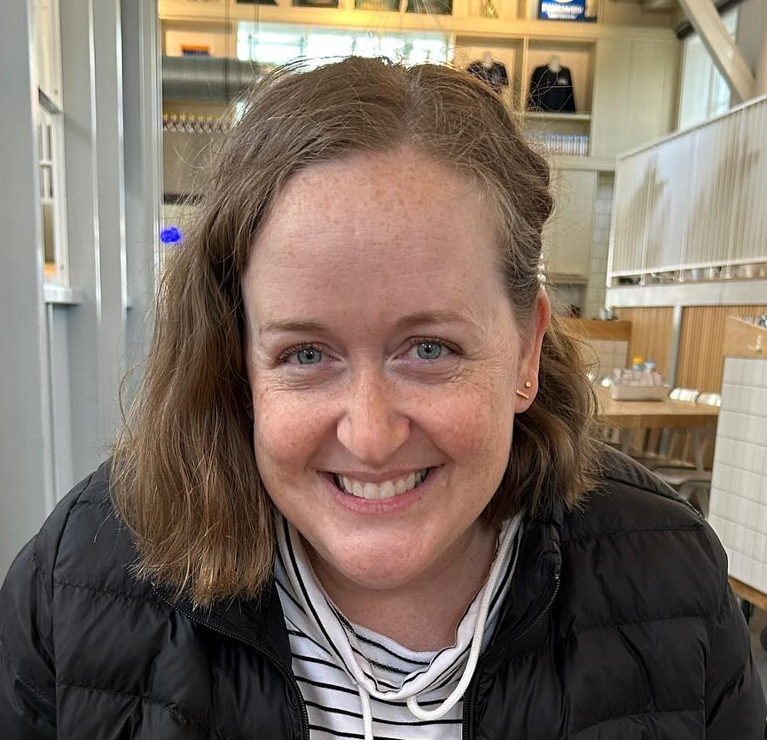

Ali Nelson

I am an entry-level web developer, looking for a full-time position where I can utilize my knowledge to create websites
Education
Bachelor of Arts in Latin American Studies, minor in Geography, Brigham Young University, Provo, Utah, August 2003
Work experience
Deseret Book Company, Salt Lake City, Utah
Production Manager, June 2019-present
- Oversee the production of all new book titles, keep the budgets and schedules on track, and manage a 2 person team
- Manage the printing process for 75 new book titles yearly, balancing schedule, cost and quality
- Maintain internal production schedule for publishing team, tracking over 100 titles at a time
- Track expenditures for new titles and ensure they are charged correctly, and that we are staying on budget
- Streamlined processes to save about 10 hours each week in this position, by simplifying and automating processes
Product Manager, November 2016-June 2019
- Oversaw product categories and ensured we had enough inventory and the right mix of products
- Coordinated shipments with our freight forwarder, ensuring they arrived in a timely manner
- Maintained internal production schedule for lifestyle team
Production Coordinator/Production Manager, June 2014-November 2016
- Maintained internal production schedules for publishing team
- Ensured appropriate processes were followed internally
- Tracked production costs, to help keep projects on budget
Accounts Payable Clerk, October 2012-June 2014
- Verified and entered invoices for payment, ensuring they were paid in a timely manner
- Handled a high volume of vendor accounts
- Backed up the team lead
Sorenson Molecular Genealogy Foundation, Salt Lake City, Utah
Assistant Database Analyst/Genealogist/Genealogy Supervisor, May 2003-July 2012
- Supervised the genealogy department, ranging in number from 2-9 members
- Managed 100,000+ pedigree charts and consent forms
Molecular Genealogy Research Group, Provo, Utah
Research Assistant, June 2000-May 2003
- Entered data into a computer database
- Secretarial duties such as filing, answering emails, and purchasing office supplies
Skills